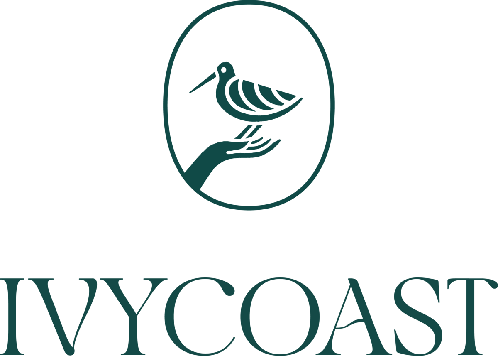
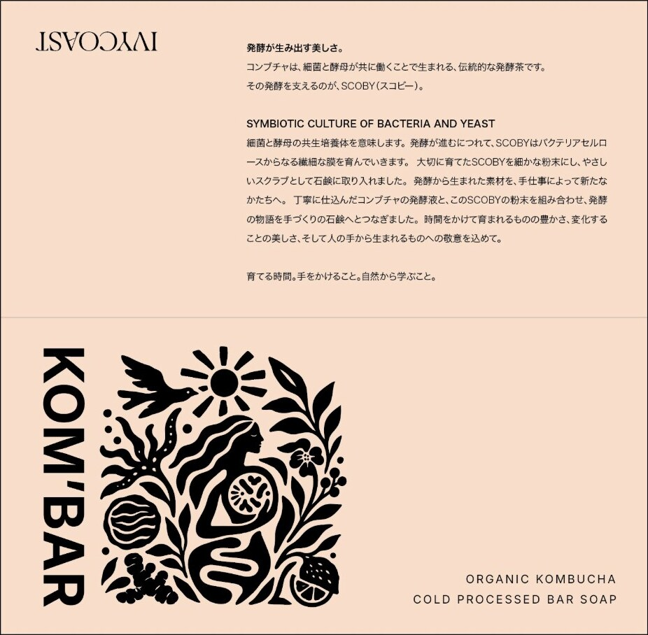
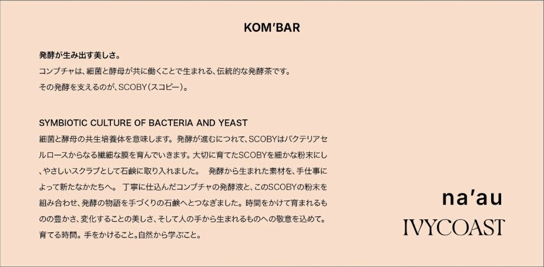

naʻau ×
Collaboration · 2026
発酵が生み出す美しさ。
Ivycoast brings Australian botanicals into Japanese homes for daily rituals. naʻau brews kombucha in Nagoya to help people listen to their bodies. Together we made KOM’BAR: a cold-process bar soap made with naʻau’s kombucha and the SCOBY that brews it.
This page sets out what we plan to make together, the language we will use, and how the collaboration sits with each naʻau direction.
01
Where Ivycoast and naʻau meet: small daily acts of care, and the patience of things that take weeks to make.
Ivycoast

Australian botanicals, brought into Japanese homes for daily rituals. Ordinary moments, elevated just enough. Calm, considered, English-led with Japanese.
naʻau kombucha
naʻau飲むだけじゃない。自分の身体に気づく、kombucha。
Small-batch kombucha from Nagoya, made by kimy. Warm, personal, Japanese-led.
What we share
02
Organic kombucha cold-processed bar soap, made with naʻau’s kombucha and SCOBY.


KOM’BAR
03
What each side makes, and where it appears. Proposals are marked.
naʻau × IVYCOAST · KOM’BAR04
How both sites talk about the collaboration, in Japanese and English.
Voice
Japanese first, English as a quiet second line. Sensory and process-led: what it is, how it’s made, how it feels to use. Calm like Ivycoast; warm and personal like naʻau. No exclamation marks, no superlatives.
Key lines
発酵が生み出す美しさ。
The beauty that fermentation makes.
育てる時間。手をかけること。自然から学ぶこと。
Time to grow. Care by hand. Learning from nature.
丁寧に仕込んだコンブチャの発酵液と、SCOBYの粉末を。
Carefully brewed kombucha, and the SCOBY that made it.
Names
Words we can use — soap
Soap is a cosmetic, so claims stay inside the approved cosmetic effects. For example:
Words we avoid
Final copy to be checked against 薬機法 by the party holding the cosmetics licence.
05
Whichever direction naʻau chooses, the collab keeps its own peach. Here is how it sits beside each one.
 ×
×naʻau today · Shiro
White and plain, so the peach package leads. The script and the Ivycoast serif contrast clearly; neither brand overpowers.
 ×
×
Lenora · Ippon
The most luxurious pairing, but two high-contrast serifs side by side can blur the brands. Keep naʻau on sumi and Ivycoast on its own paper.
kombuchaから、
石鹸ができました。
— kimy
 ×
×Ogg · Ma
The warmest fit: Ogg’s calligraphic serif and Ivycoast’s flared serif feel related but distinct, and kimy’s notes add the maker’s voice.
06
Responsibilities and next steps.
Ivycoast
naʻau
Together